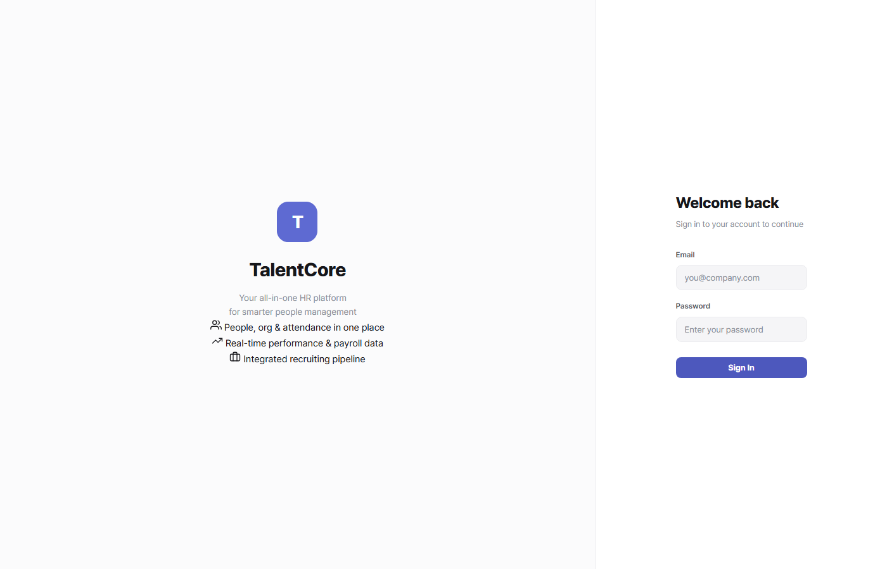

기능 개요
조직 관리는 TalentCore의 핵심 마스터 데이터 모듈입니다. 직원 전체 라이프사이클(입사→재직→퇴직)을 관리하며, 부서·직급·직군 체계, 리포팅 라인(매니저), 인사발령 이력, 스킬·자격증, 그리고 퇴직 프로세스를 포함합니다.
직원 프로필
조직도
인사발령
퇴직 처리
조직 계층 구조
부서 4단계 계층
핵심 프로세스
직원 입사 프로세스
퇴직 처리 프로세스 (3단계 마법사)
퇴직 처리 후 직원 레코드는 삭제되지 않습니다. 상태만 Terminated로 변경되며 근로기준법 §42에 따라 3년 이상 보관됩니다.
인사발령 흐름
직원 프로필 — 5탭 구조
👤
기본정보
이름·사번·연락처
비상연락처·주소
비상연락처·주소
🏢
인사정보
부서·직급·직군
매니저·인사발령 이력
매니저·인사발령 이력
💰
급여
기본급·밴드 위치
salary_history 타임라인
salary_history 타임라인
⏰
근태
출근일수·연차
수당 합계
수당 합계
🎯
성과·스킬
등급 이력
스킬·자격증
스킬·자격증
급여·근태·성과 탭은 본인, 소속 매니저, HR Admin만 볼 수 있습니다. 다른 팀 매니저는 기본정보·인사정보 탭만 접근 가능합니다.
권한 매트릭스
역할별 사용법
📌 내 프로필 확인 및 셀프서비스 수정
프로필 메뉴
우측 상단 이름 클릭 → 프로필 페이지. 또는 조직도에서 본인 노드 클릭
수정 가능 항목
전화번호, 주소, 비상연락처(이름·관계·연락처) 직접 수정 가능. 그 외 항목은 HR 요청 필요
스킬·자격증 등록
프로필 → 성과·스킬 탭 → 스킬 추가 / 자격증 추가 (만료일 입력 시 30일 전 알림)
📌 퇴직 신청
나 → 퇴직 신청
사이드바 나 섹션 → 퇴직 신청. 희망 퇴직일, 사유, 메모 입력
승인 대기
매니저 검토 → HR 최종 승인 후 퇴직금 정산 및 오프보딩 진행
📌 팀원 프로필 조회
직원 목록
팀원 이름 클릭 → 프로필 상세. 기본정보·인사정보·급여·근태·성과 5탭 접근 가능 (소속팀만)
인사발령 기안
직원 프로필 → 인사정보 탭 → 발령 추가 → HR 승인 요청 제출
📌 직원 신규 등록
직원 목록 → + 직원 추가
이름·이메일·부서·직급·직군·입사일·기본급·고용형태 입력. 사번(EMP-XXXX) 자동 생성
매니저(리포팅 라인) 지정
manager_id 드롭다운에서 직속 상관 선택 → 조직도에 자동 반영
계약서 발행 및 복리후생 등록 안내
저장 후 계약서 발행, 복리후생 Enrollment Event 자동 생성
📌 퇴직 처리 (HR 최종 승인)
퇴직 요청 목록 확인
대시보드 Inbox → 퇴직 승인 대기 건 클릭
분석 정보 입력
아쉬운 퇴직 여부, 재채용 가능 여부, 실제 이탈 원인 선택 (퇴직자 분석에 활용됨)
최종 승인
퇴직일·최종 근무일 확정 → 승인 → 퇴직금 정산 페이지 자동 이동
아쉬운 퇴직 여부와 이탈 원인은 퇴직자 분석 탭의 데이터 품질을 결정합니다. HR 프로세스에서 반드시 입력하도록 표준화하세요.

직원 목록 — 다중 필터 (직군·직급·고용형태·성과등급)